Patso ve Sandviçler
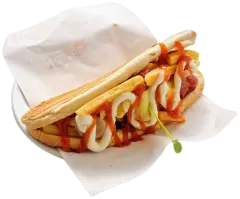
Patso Sandviç
280 ₺Patates kızartması, ketçap, mayonez

Kaşarlı Patso Sandviç
300 ₺Patates kızartması, kaşar peyniri, ketçap, mayonez
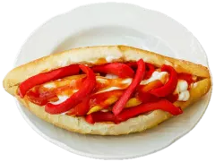
Sosisli Patso Sandviç
300 ₺Patates kızartması, sosis, ketçap, mayonez
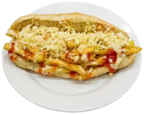
Double Kaşarlı Patso Sandviç
300 ₺Patates kızartması, kaşar peyniri, ketçap, mayonez
Makarnalar ve mantı
Bu bölümdeki makarnaların çoğu “350 ₺ öde, dilediğin kadar ye” kampanyasında. Hangileri olduğunu kasaya sorun.
Penne Arrabbiata
350 ₺Napolitan sos, jalapeno biber
Tavuklu Mantarlı Makarna
380 ₺Krema, 150 g tavuk, mantar, soya sos

Napolitan Soslu Makarna
350 ₺Napolitan sos
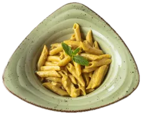
Köri Soslu Tavuklu Makarna
380 ₺Köri sos, krema, 150 g tavuk, soya sos
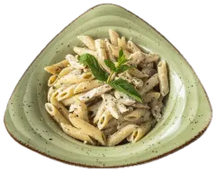
Pesto Soslu Makarna
380 ₺Taze fesleğenli sos, krema, soya sos
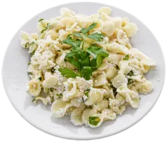
Peynirli Makarna
380 ₺Tulum peyniri krema
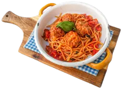
Misket Köfteli Makarna
420 ₺Misket köfte, Napolitan sos
Mac & Cheese
380 ₺Mac and cheese sos, kaşar peyniri, penne makarna
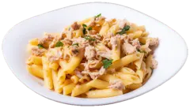
Ton Balıklı Makarna
400 ₺Ton balığı, krema
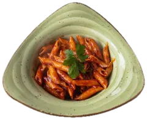
Yoğurtlu Napolitan Soslu Makarna
380 ₺Napolitan sos, yoğurt
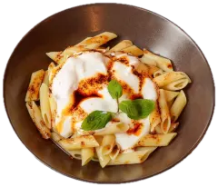
Çıtır Patatesli Yoğurtlu Makarna
390 ₺Çıtır patates, Napolitan sos, yoğurt
3 Renkli Tortellini
500 ₺Krema, 3 renkli tortellini, parmesan peyniri
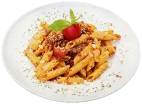
Bolognese Soslu Makarna
430 ₺Kıyma, Napolitan sos
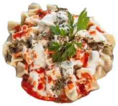
Mantı
430 ₺Yoğurt, özel sos
200 gram Tavuklar
Tavuklar 200 gramdır; yanında kremalı makarna ve salata gelir.
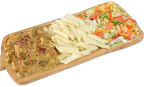
Köri Soslu Tavuk
450 ₺Tavuk, mantar, soya sos, krema

Barbekü Soslu Tavuk
450 ₺Tavuk, biber, barbekü sos
Izgara Tavuk Göğüs
450 ₺Tavuk göğüs
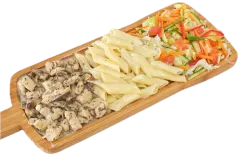
Kekikli Tavuk
440 ₺Tavuk, krema, kekik
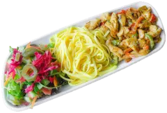
Café de Paris Soslu Tavuk
440 ₺Çıtır tavuk, kremalı makarna, salata ile
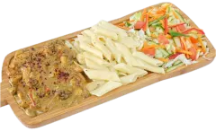
Ballı Hardallı Tavuk
450 ₺Tavuk, biber
Çıtır Tavuk
450 ₺Çıtır tavuk
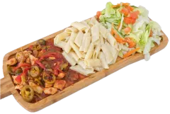
Acı Sever Tavuk
450 ₺Tavuk, biber, jalapeno biber, acı sos
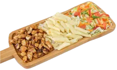
Soya Soslu Tavuk
450 ₺Tavuk, biber, soya sos
Şefin Has Tavası
450 ₺Tavuk, biber, mantar, soya sos
Şef Special
450 ₺Tavuk, biber, mantar, krema
Izgara Köfte
Izgara Köfte
600 ₺Garnitür ile
Patatesli Burgerler
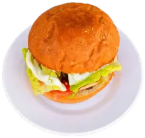
Vera Burger
400 ₺Domates, turşu, kibrit patates kızartması, cheese sos, ketçap, mayonez, barbekü sos, marul. Patates kızartması ile
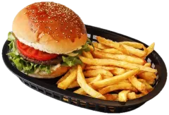
Double Cheeseburger
450 ₺Domates, turşu, kibrit patates kızartması, cheese sos, ketçap, mayonez, barbekü sos, marul, cheddar peyniri. Patates kızartması ile

Tavuk Burger
350 ₺Çıtır tavuk, domates, turşu, marul, kibrit patates kızartması, ketçap, mayonez, barbekü sos, cheese sos. Patates kızartması ile
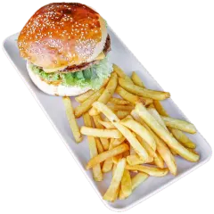
Çıtır Tavuk Burger
380 ₺2 adet kemiksiz tavuk, domates, turşu, marul, kibrit patates kızartması, ketçap, mayonez, barbekü sos, cheese sos. Patates kızartması ile
Paylaşmalık Çıtırlar
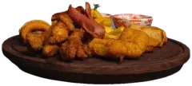
Çıtır Tabak
400 ₺Patates kızartması, 3 adet sosis, 3 adet soğan halkası
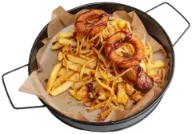
Maxi Çıtır Tabak
650 ₺Patates kızartması, 5 adet sosis, 5 adet soğan halkası, 5 adet kemiksiz çıtır tavuk, 5 adet çıtır mantar
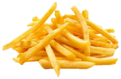
Patates Kızartması
270 ₺Parmak dilim
Soğuk İçecekler
- Coca-Cola Zero Sugar (33 cl.)Kutu içecek100 ₺
- Coca-Cola (33 cl.)Kutu içecek100 ₺
- Fanta (33 cl.)Kutu içecek100 ₺
- Sprite (33 cl.)Kutu içecek100 ₺
- Cappy (33 cl.)Kutu içecek100 ₺
- Fuse Tea (33 cl.)Kutu içecek100 ₺
- Şalgam Suyu (33 cl.)Pet şişe90 ₺
- Ayran (30 cl.)Büyük boy90 ₺
- Meyveli Soda (20 cl.)Cam şişe80 ₺
- Soda (20 cl.)Cam şişe80 ₺
- Su (50 cl.)Pet şişe50 ₺